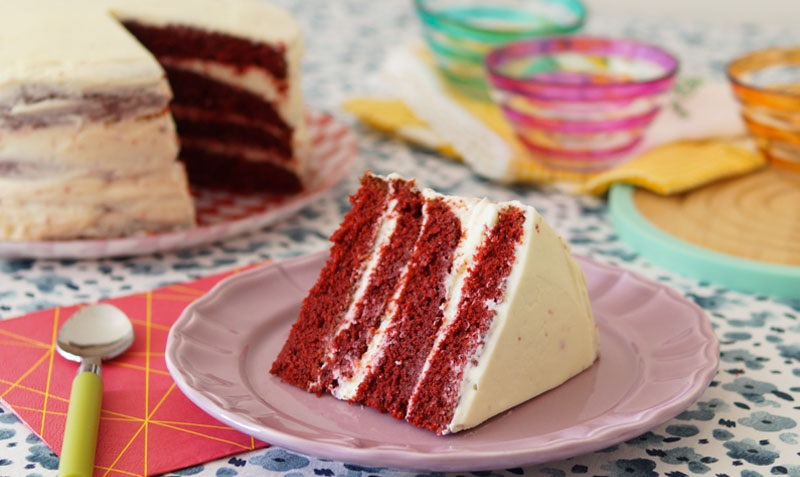

Bolo Red Velvet

Acceso Rapido
O Melhor Bolo De Todos
Aprenda a preparar o famoso bolo Red Velvet, que passa a ser traduzido como veludo vermelho e cujo nome é motivado pela aparência do bolo de esponja que é feito. É um pão de ló úmido e suculento, com um leve toque azedo que é maravilhoso e a cobertura de queijo doce é o que torna a combinação autêntica ... escândalo!
Na receita, estou ensinando todos os truques para obter a melhor textura, a melhor cor, o que é necessário para cortar os bolos, como preenchê-los e qualquer detalhe, para que seja muito fácil preparar esse bolo em casa, pois é ótimo para celebrações e ocasiões especial e seu sabor não deixa ninguém indiferente.
Ingredientes
Para O Bolo
- 130 gr de mantequilla sin sal.
- 270 gr de azúcar blanco.
- 2 huevos M.
- 300 gr de harina de trigo.
- 1 cucharada sopera de cacao puro en polvo.
- 1 cucharadita de postre de bicarbonato.
- Buttermilk: 230 gr de leche entera y 1 cucharada sopera de zumo de limón.
- 1 cucharadita de postre de colorante en gel rojo.
- 1 cucharadita de postre de vinagre de vino blanco.
- 1 cucharadita de esencia de vainilla o aroma de vainilla.
Para A Creme
- 150 gr de mantequilla sin sal.
- 200 gr de azúcar glas.
- 600 gr de queso crema.
Preparacion
- Como necesitamos que la mantequilla esté cremosa o lo que se conoce como pomada, sácala de la nevera al menos una hora o dos antes. Si te no te has acordado de hacerlo tiene solución ya que puedes cortarla en cubitos y así con media hora suele ser suficiente o, si tienes más prisa aún, introduce el recipiente en el microondas durante unos segundos hasta que veas que ya no está tan sólida pero que en ningún momento llegue a derretirse.
- Para preparar el buttermilk pon la leche en un recipiente o vaso y añade el zumo de limón. Remueve un poco con una cuchara y deja que repose unos 10 minutos para que la leche se corte ya que es el resultado que buscamos. Es así de sencillo de elaborar en casa y va genial para la textura y sabor de recetas de repostería como ésta.

- Pon un colador encima de un bol y echa encima la harina, el bicarbonato y el cacao puro en polvo y hazlos pasar a través de él sujetándolo con una mano y golpeándolo suavemente con la otra. A este proceso se le llama tamizar y sirve para que caigan sin grumos ni apelmazamientos. Mézclalo toco un poco con una cuchara.
- Pon en otro bol (amplio, será en el que finalmente lo juntaremos todo) la mantequilla con el azúcar y bátelos hasta conseguir una mezcla homogénea y esponjosa. Puedes batir con un robot, con unas varillas manuales o con unas varillas eléctricas como he hecho yo.
- Casca un huevo, incorpóralo al bol en el que están la mantequilla con el azúcar y bate hasta que se integre bien. Haz lo mismo con el otro huevo.
- Echa en el recipiente del buttermilk el resto de ingredientes líquidos: el colorante rojo, el vinagre y la vainilla. Mezcla bien con ayuda de una cuchara.
- En el bol de la mantequilla y el azúcar echa aproximadamente la mitad de los ingredientes secos y todos los líquidos y mezcla bien pero sin batir para mantener la esponjosidad de la mezcla. Simplemente puedes utilizar unas varillas manuales y mezclarlo todo haciendo círculos.
- Finalmente añade el resto de los ingredientes secos y mezcla hasta que el aspecto sea homogéneo.
- Precalienta el horno a 170ºC con calor arriba y abajo, sin aire ni ventilador.
- Abre cada uno de los dos moldes, pon sobre cada base papel de horno y ciérralos de nuevo, esto facilitará el desmoldado después. También me gusta untar los laterales con un poco de mantequilla, suelo hacerlo con mis propios dedos o con un pincel de cocina.
- Reparte la masa en los dos moldes y cuando el horno haya llegado a la temperatura, introduce los moldes sobre una rejilla en el horno a altura media y deja que se horneen unos 25-30 minutos. Cuando llevan unos 25 minutos suelo hacer la prueba del palillo que consiste en introducir un palillo en el bizcocho, y si sale limpio es que está listo, pero si no es así lo dejo unos minutos más. En este caso es posible que salga con un poco de color rojo, pero con «limpio» me refiero a que no salga con masa pegada, señal de que le falta un poco de horneado.

- Coloca los moldes sobre una rejilla para que se enfríen un poco durante 10 minutos y a continuación desmolda los bizcochos con cuidado y envuélvelos por separado con papel film para retener la humedad y que queden muy jugosos.
- Yo lo que hago para que queden lo más lisos posibles es colocarlos boca abajo, de forma que la parte superior que suele quedar más abultada se alise.
- Mételos al momento en la nevera y déjalos reposar un mínimo de 4 horas aunque a mi me gusta prepararlos el día anterior.
- Para preparar la cobertura recuerda que también necesitamos la mantequilla cremosa así que sácala de la nevera con antelación o haz el truco del microondas.
- Pon la mantequilla en un bol junto con el azúcar glas y mezcla bien, ya sea con un robot amasador (como he utilizado yo) o bien unas varillas manuales o eléctricas.
- Después incorpora el queso crema (hazlo en 3 tandas, echando 200 gr, mezclando y a continuación los siguientes) y mezcla bien hasta que el resultado sea homogéneo y esponjoso, sin grumos de queso.

- Saca los bizcochos de la nevera y córtalos por la mitad. También podrías dejarlos tal cual y tener una tarta con solo 2 capas pero visualmente es mejor 4 y además al mezclarse más con la cobertura la combinación es fantástica.
- Para cortar los bizcochos el utensilio más conveniente es una lira como la que estoy utilizando yo, pero también podéis usar un cuchillo largo e incluso tipo jamonero, y hay quien los corta con un hilo bien tensado.

- Para rellenarlos voy colocando los bizcochos tal cual, es decir, primero la parte de abajo de uno, unto con cobertura y coloco encima la parte de arriba de ese mismo bizcocho y sigo. Para extender la cobertura lo ideal es utilizar una espátula aunque una lengua de cocina o similar también os puede servir.
- Hay que untar las 3 capas intermedias y cuando esté todo el bizcocho montado, hacer una capa final por fuera. Mi recomendación es que para las capas intermedias uses la mitad de la cobertura y reserves la otra mitad para fuera, aunque realmente depende de la decoración que quieras hacer. Yo la he dejado al modo «rústico», simplemente cubriéndola pero sin perfeccionar bordes y demás y dejando que se aprecien un poco los bizcochos por fuera. También puedes utilizar una manga pastelera para ir cubriendo las capas internas y también la externa.

Tarta Red Velvet americana. Receta paso a paso